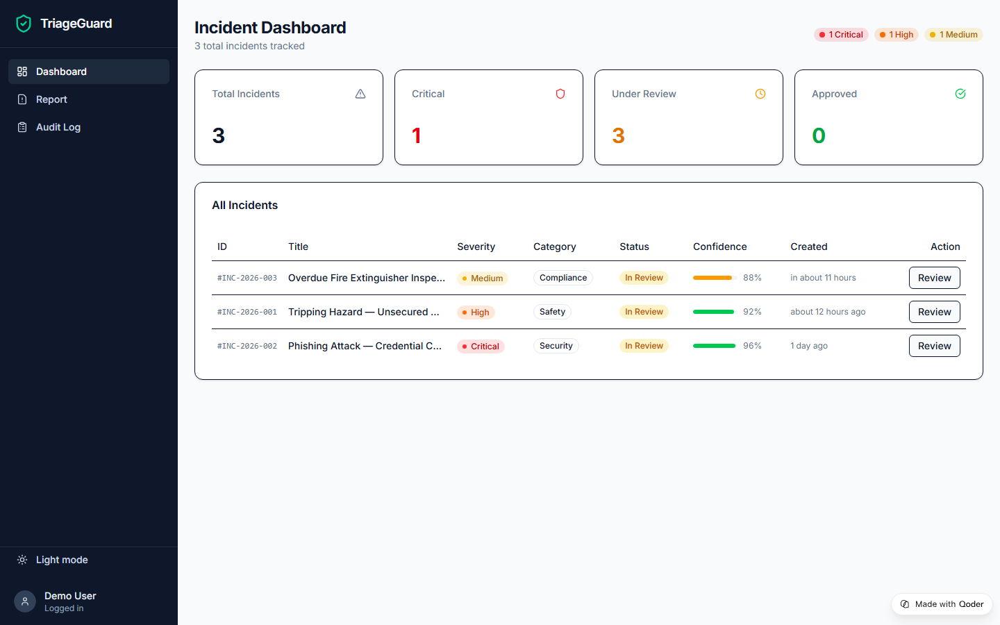
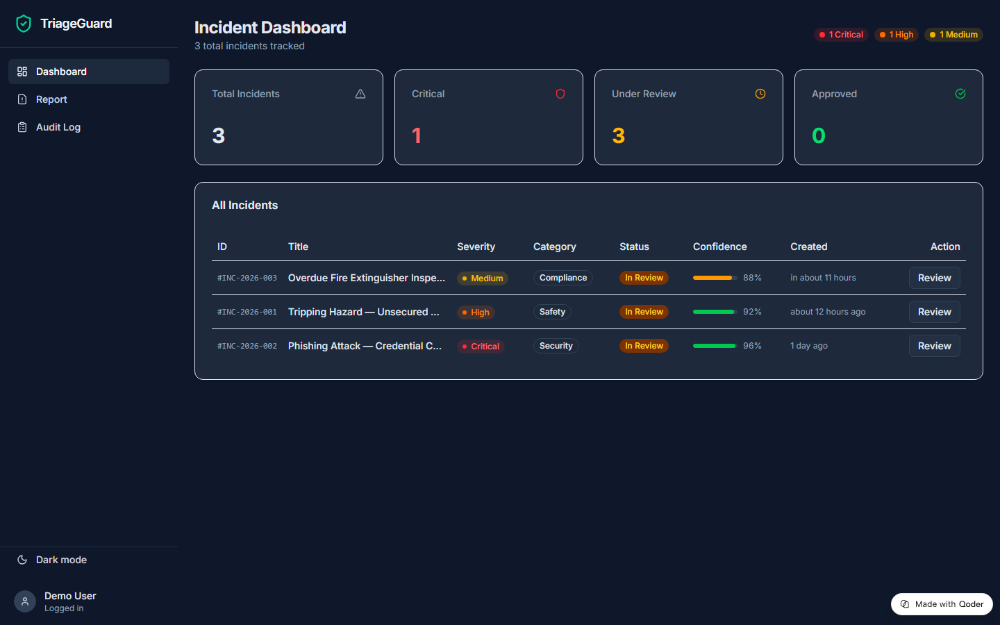
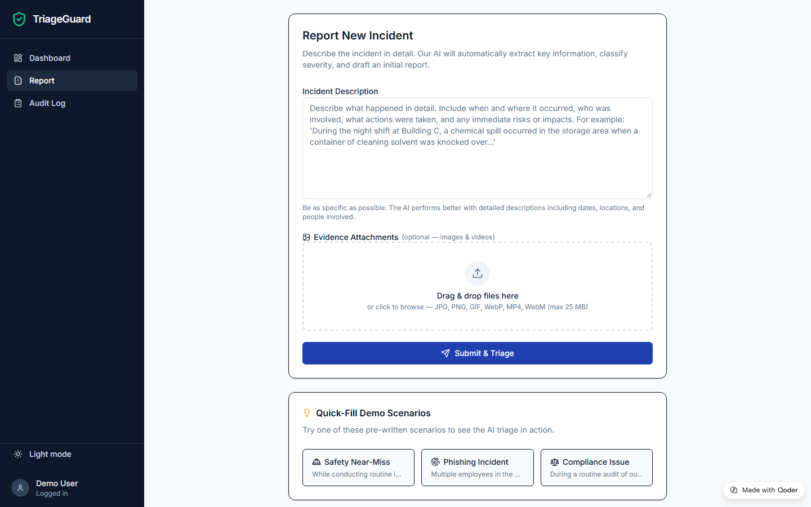
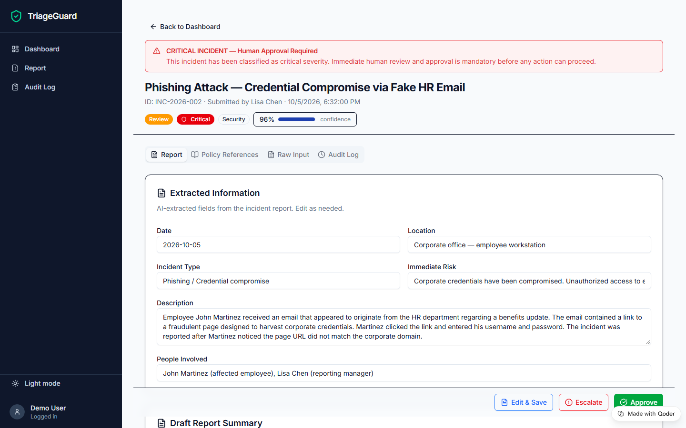
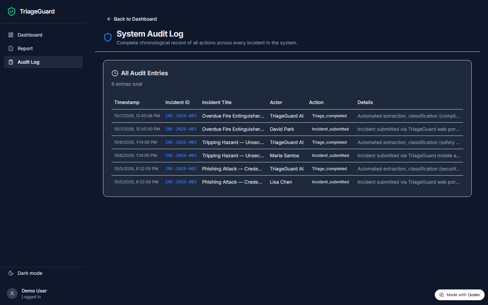
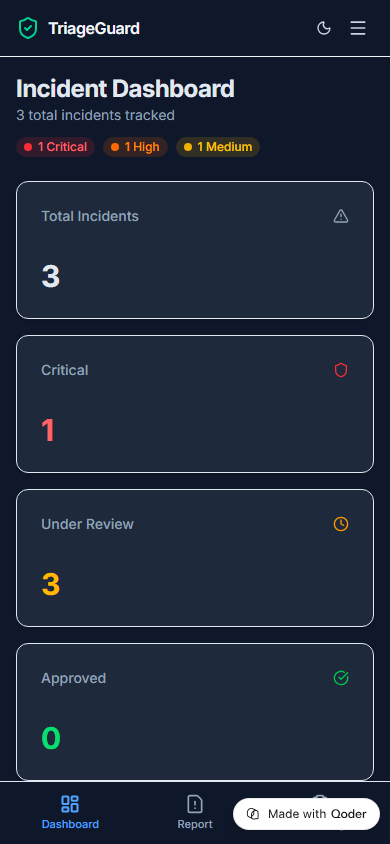
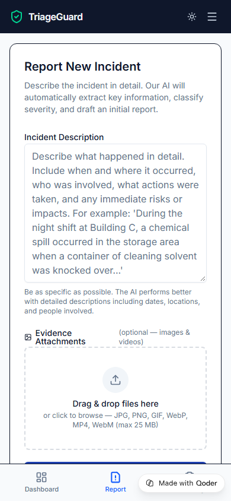
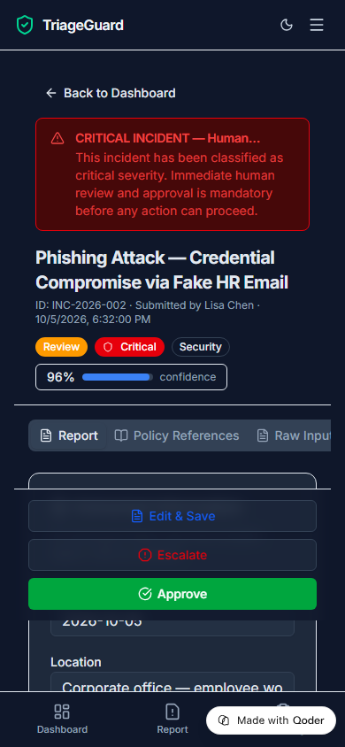

AI-powered incident triage with human-in-the-loop approval. Submit an incident, let AI extract details, classify severity, match policies, and draft a report — then a human reviewer approves or escalates.
Open Live App →Incident triage today is slow, inconsistent, and error-prone.
Manual triage can take hours or days. Critical incidents sit in queues while responders manually classify, cross-reference policies, and draft reports.
Different reviewers apply different severity levels to similar incidents. Without standardized extraction, key details are missed or misinterpreted.
Actions taken during triage are poorly documented. When regulators or internal auditors ask "who decided what and when?", the answers are scattered.
Every incident passes through a four-stage AI pipeline before human review.
AI reads the raw report and pulls out date, location, people, type, and immediate risk.
Assigns severity (Critical High Medium Low), category, and confidence score.
RAG retrieval finds the most relevant company policy documents and excerpts for the incident type.
Generates an editable report with summary, recommended actions, assigned owners, and deadlines.
Everything a triage team needs in one dashboard.
At-a-glance view of all incidents with color-coded severity badges, confidence bars, and status filters. Desktop table + mobile card views.
Describe an incident in plain text, drag & drop photos or video evidence (JPG, PNG, MP4), and let AI do the rest.
Reviewers see AI-extracted fields, matched policies, and the draft report. Edit any field, then approve, save, or escalate — all logged.
Every action is timestamped and attributed. Full chronological trail across all incidents for compliance and accountability.
Toggle between light, dark, and system themes. Persisted to localStorage so it sticks across sessions.
Desktop sidebar collapses to mobile header + bottom tab bar. Tables become card views. Action buttons stack vertically. Works on any device.
Desktop and mobile views in light and dark themes.








Modern frontend deployed on Qoder Sites.
Client-side React SPA with hash-based routing. State management via React Context + useReducer. Demo AI pipeline uses keyword-based extraction and classification (Seth's secure Qwen backend handles real AI inference). Policy matching against 7 embedded compliance documents. All data stored in-memory for the demo; production would use a persistent backend.
Built in one day for the Alibaba Qoder AI Hackathon.
The app is deployed and publicly accessible.
Open TriageGuard → Submit a Demo Incident →